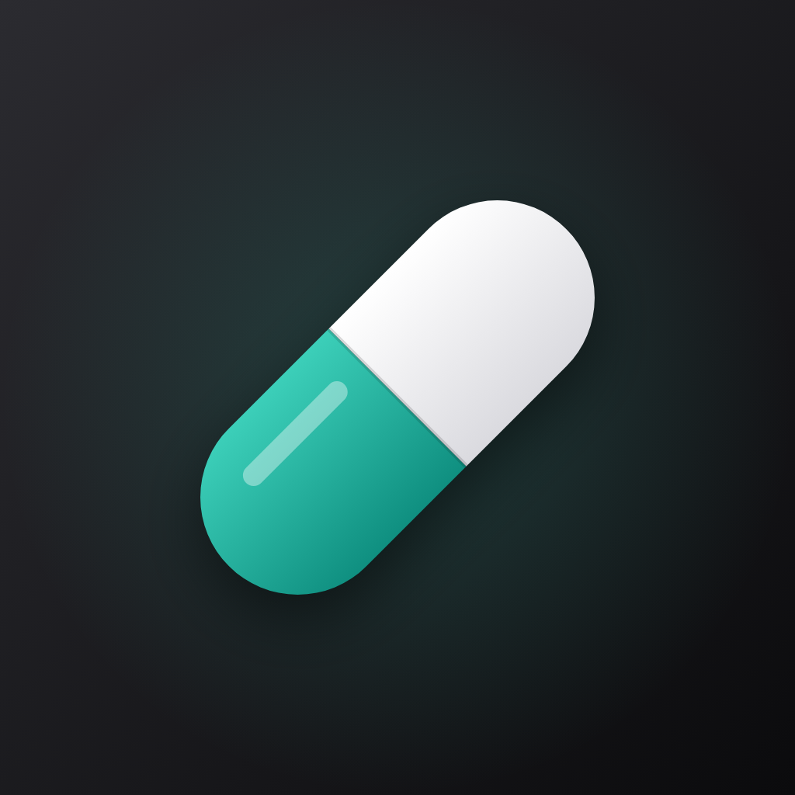

Take a PillGizlilik Politikası
Son güncelleme: 2 Kasım 2026
Topladığımız veriler
Biz hiçbir veri toplamıyoruz. Uygulamada hesap, giriş ya da bize ait bir sunucu yoktur. Reklamlar için Google’ın topladığı veriler aşağıdaki “Reklamlar” bölümündedir.
Cihazında saklananlar
Girdiğin ad (isteğe bağlı), ilaç adları, dozlar, programlar, yemek saatleri, ayarların ve doz geçmişin cihazındaki yerel bir veritabanında saklanır. Bu veriler cihazdan çıkmaz ve reklam ağına verilmez. Uygulamayı sildiğinde bu veriler de silinir.
Reklamlar
Uygulama, Google AdMob aracılığıyla reklam gösterir. Bunun için internete bağlanır; reklamları görmeden de tüm hatırlatmalar çalışır.
- Google’ın topladıkları: IP adresi (genel konum tahmini için), uygulama ya da geliştirici kapsamlı cihaz tanımlayıcıları, görülen reklamlar ve reklam etkileşimleri, uygulama performansı ve hata bilgileri. Bu veriler reklam gösterimi, ölçüm, analiz ve sahtecilik önleme için kullanılır.
- Kişiselleştirme: Reklamlar kişiselleştirilmemiş olarak istenir. Uygulama iOS’ta takip izni istemez; Android’de reklam kimliğine ve ilgi alanı (Privacy Sandbox) özelliklerine erişim izni kaldırılmıştır.
- İlaç bilgilerin: İlaç adların, dozların, programın, geçmişin ve adın reklam isteklerine eklenmez.
- Seçimlerin: Avrupa Ekonomik Alanı, Birleşik Krallık ve İsviçre’de reklam için izin penceresi gösterilir; seçimini Ayarlar’daki “Reklam gizlilik seçenekleri”nden değiştirebilirsin.
Google’ın bu verileri nasıl kullandığını Google’ın sayfasından öğrenebilirsin.
İzinler
- Bildirimler: İlaç saatinde seni hatırlatmak için. Bildirimler cihazda yerel olarak planlanır.
- Alarmlar (iOS 26 ve üzeri): Telefon sessizdeyken de kilit ekranında ve Dynamic Island’da alarm çalabilmek için. Bu izin isteğe bağlıdır; vermezsen hatırlatmalar bildirimle yapılır.
Üçüncü taraflar
İlaç bilgilerin hiçbir üçüncü tarafla paylaşılmaz, satılmaz ya da aktarılmaz. Tek üçüncü taraf, yukarıda açıklanan reklam hizmetiyle Google’dır. Uygulamayı değerlendirme isteği Apple’ın sistem penceresiyle gösterilir; bu işlem Apple’ın kendi politikalarına tabidir.
Çocuklar
Uygulama çocuklara yönelik değildir.
Tıbbi uyarı
Take a Pill bir hatırlatma aracıdır; tıbbi tavsiye vermez, teşhis ya da tedavi amacı taşımaz. İlaç kullanımıyla ilgili kararlar için doktoruna ya da eczacına danış.
Değişiklikler
Bu politika değişirse yeni sürümü bu sayfada yayınlanır ve yukarıdaki tarih güncellenir.
İletişim
Sorular için destek sayfasına bak.